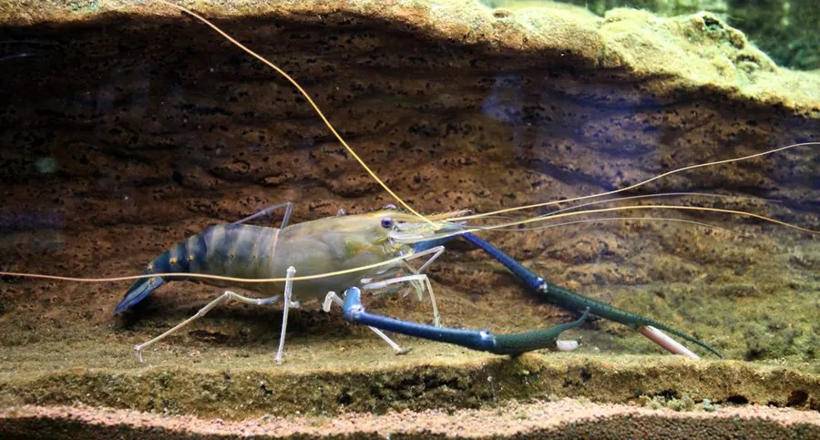

甲壳动物 · 动物界
罗氏沼虾 Macrobrachium rosenbergii

世界上最大的淡水虾之一，雄虾螯足可超过体长，原产东南亚，是中国南方地区重要的淡水养殖虾类之一。
- 分类
- 门节肢动物门纲软甲纲目十足目科长臂虾科属沼虾属
- 栖息环境
- 温暖的淡水河湖与养殖池塘，幼体需半咸水环境
- 地理分布
- 原产东南亚、南亚，现被中国等地广泛养殖
- 保护级别
- 暂无评估；主要养殖对象
物种志
罗氏沼虾体长可达 25–30 cm，体重可超过 500 g，是世界上最大的淡水虾之一。体色青褐或蓝绿色，额剑长，雄虾第二对步足特别长，可超过身体长度，用于争斗和求偶；雌虾螯足较短。
它原产于东南亚和南亚的河口与淡水水域，喜欢温暖的水体，杂食，取食水生昆虫、藻类、有机碎屑和小型底栖动物。罗氏沼虾生长快、个体大，20 世纪 70 年代起在世界各地推广养殖，中国南方是主要产区。养殖需要保持水温在 25 ℃ 以上，并注意水质管理。雌虾抱卵孵化，幼体需要经过咸淡水阶段，因此在繁殖场要使用半咸水育苗。罗氏沼虾的抱卵量随个体增大而增加，雌虾一次可抱卵数万粒。
形态与习性
- 食性杂食，取食水生昆虫、藻类、有机碎屑
- 体长约 25–30 cm，体重可超 500 g
- 识别雄虾螯足特别长，可超过身体长度
- 养殖需 25 ℃ 以上水温，中国南方主产
- 繁殖雌虾抱卵，幼体需半咸水育苗
- 分布原产东南亚和南亚
趣味知识
- 罗氏沼虾是世界上最大的淡水虾之一，最大个体接近 30 厘米。
- 雄虾的长螯足比身体还长，常用来争斗和求偶。
- 罗氏沼虾育苗需要半咸水，这是养殖中的关键环节。